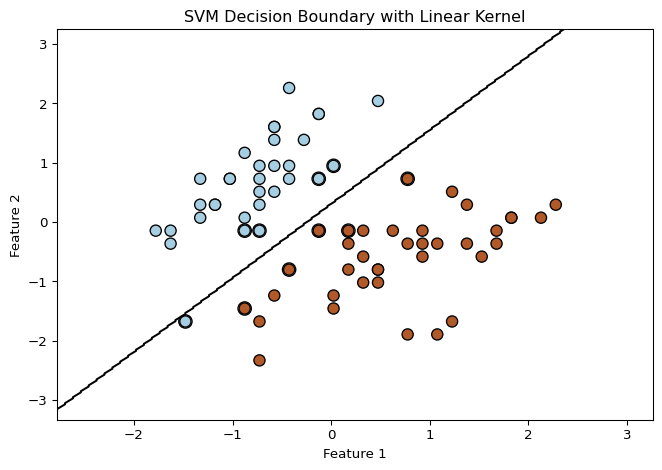
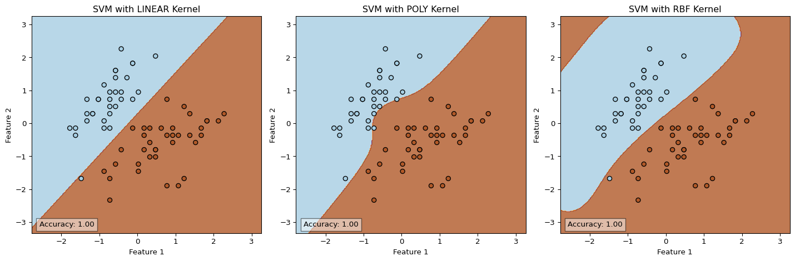
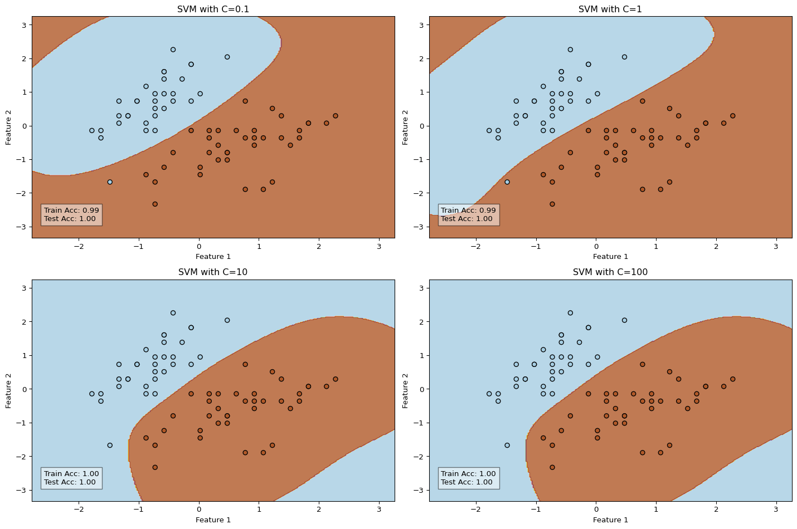
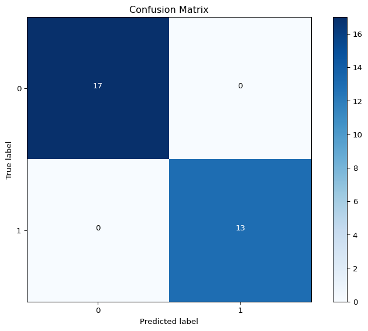
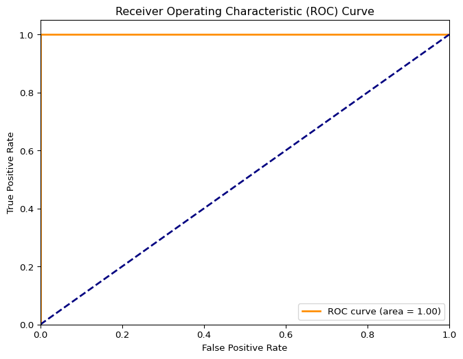
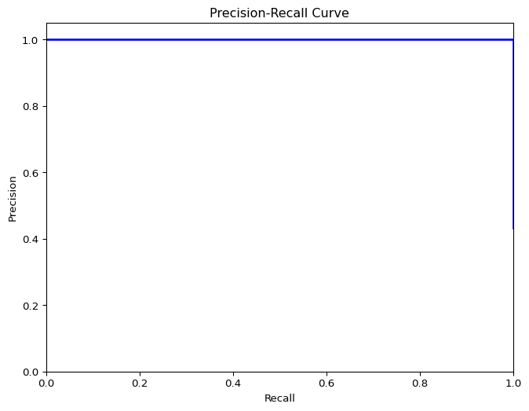
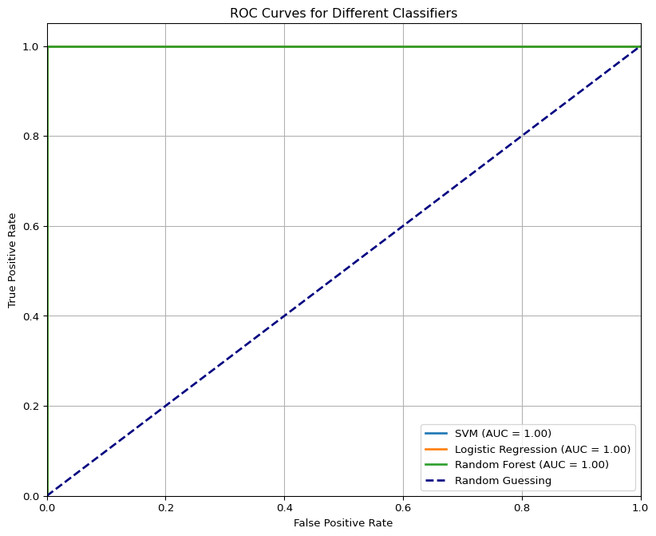
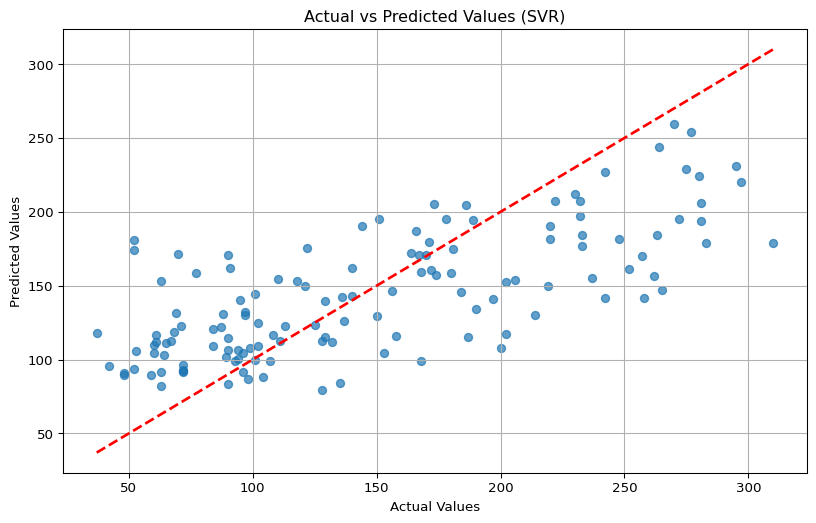
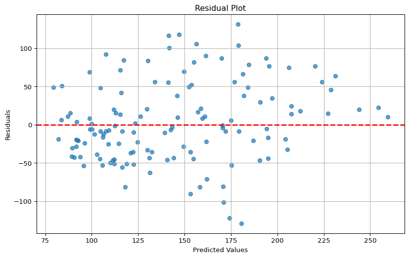

import numpy as np
import matplotlib.pyplot as plt
from sklearn import svm, datasets
from sklearn.model_selection import train_test_split
from sklearn.preprocessing import StandardScaler8 Support Vector Machines and Model Evaluation
8.1 Support Vector Machine (SVM)
Support Vector Machines (SVMs) are powerful supervised learning algorithms used for both classification and regression tasks. Their primary goal is to find the optimal hyperplane that maximizes the margin between different classes.
8.1.1 Key Concepts
- Maximizes the margin between classes to improve generalization
- Support vectors are the data points closest to the decision boundary
- Decision boundary (hyperplane) separates the classes
- Based on optimization theory with learning bias derived from statistical learning theory
8.1.1.1 Conceptual Understanding
SVMs work by finding the hyperplane that creates the largest margin between the two classes in the training data. This margin is defined as the perpendicular distance between the decision boundary and the closest data points from each class (the support vectors).
The mathematical objective of an SVM can be expressed as: - Maximize the margin width (2/||w||) - Subject to constraints that ensure no data points fall within the margin
The optimization problem becomes: - Minimize (1/2)||w||² subject to y_i(w·x_i + b) ≥ 1 for all training points (x_i, y_i)
For non-linearly separable data, SVMs introduce “slack variables” (ξ) that allow some points to violate the margin: - Minimize (1/2)||w||² + C·Σξ_i subject to y_i(w·x_i + b) ≥ 1 - ξ_i and ξ_i ≥ 0
# Load and prepare sample data
iris = datasets.load_iris()
X = iris.data[:, :2] # Using first two features for visualization
y = iris.target
# Only use two classes for binary classification example
X = X[y != 2]
y = y[y != 2]
# Split data
X_train, X_test, y_train, y_test = train_test_split(X, y, test_size=0.3, random_state=42)
# Standardize features
scaler = StandardScaler()
X_train = scaler.fit_transform(X_train)
X_test = scaler.transform(X_test)
# Create and train SVM classifier with linear kernel
clf = svm.SVC(kernel='linear', C=1.0)
clf.fit(X_train, y_train)
# Create a mesh to plot in
x_min, x_max = X_train[:, 0].min() - 1, X_train[:, 0].max() + 1
y_min, y_max = X_train[:, 1].min() - 1, X_train[:, 1].max() + 1
h = 0.02 # Fixed step size for the mesh grid
xx, yy = np.meshgrid(np.arange(x_min, x_max, h),
np.arange(y_min, y_max, h))
# Plot the decision boundary
Z = clf.predict(np.c_[xx.ravel(), yy.ravel()])
Z = Z.reshape(xx.shape)
plt.contour(xx, yy, Z, colors='k', levels=[-1, 0, 1], linestyles=['--', '-', '--'])
# Plot the training points
plt.scatter(X_train[:, 0], X_train[:, 1], c=y_train, cmap=plt.cm.Paired,
edgecolors='black', s=70)
# Highlight the support vectors
plt.scatter(clf.support_vectors_[:, 0], clf.support_vectors_[:, 1], s=100,
linewidth=1, facecolors='none', edgecolors='k')
plt.xlabel('Feature 1')
plt.ylabel('Feature 2')
plt.title('SVM Decision Boundary with Linear Kernel')
plt.tight_layout()
plt.show()
# Print model accuracy
print(f"Training accuracy: {clf.score(X_train, y_train):.3f}")
print(f"Testing accuracy: {clf.score(X_test, y_test):.3f}")
Training accuracy: 0.986
Testing accuracy: 1.0008.1.2 The Dual Problem and Support Vectors
SVMs are often solved in their dual form using Lagrange multipliers, which makes the kernel trick possible. The dual optimization problem becomes:
- Maximize Σα_i - (1/2)ΣΣα_i·α_j·y_i·y_j·K(x_i, x_j)
- Subject to 0 ≤ α_i ≤ C and Σα_i·y_i = 0
In this formulation: - Data points with α_i > 0 are the support vectors - Support vectors are the critical elements that define the decision boundary - Only a subset of training points become support vectors, making SVM memory-efficient
8.1.3 SVM for Classification and Regression
SVMs can be used for both classification and regression tasks:
8.1.3.1 SVM Classification (SVC)
- Binary Classification: Finds the optimal hyperplane to separate two classes
- Multiclass Classification: Uses strategies like one-vs-rest or one-vs-one
- Probabilistic Outputs: Can be calibrated to provide probability estimates
8.1.3.2 SVM Regression (SVR)
- Predicts continuous values by finding a function that has at most ε deviation from the targets
- Uses an ε-insensitive loss function: only errors greater than ε are penalized
- Applies the same principles of margin maximization but for regression
8.1.4 Non-linear Classification with Kernels
When data isn’t linearly separable in the original feature space, SVMs use the kernel trick to implicitly map data into a higher-dimensional space where linear separation becomes possible:
# Compare different SVM kernels
kernels = ['linear', 'poly', 'rbf']
plt.figure(figsize=(15, 5))
for i, kernel in enumerate(kernels):
clf = svm.SVC(kernel=kernel, gamma='scale')
clf.fit(X_train, y_train)
# Plot the decision boundary
plt.subplot(1, 3, i+1)
# Create a mesh to plot in
x_min, x_max = X_train[:, 0].min() - 1, X_train[:, 0].max() + 1
y_min, y_max = X_train[:, 1].min() - 1, X_train[:, 1].max() + 1
xx, yy = np.meshgrid(np.arange(x_min, x_max, 0.02),
np.arange(y_min, y_max, 0.02))
# Plot the decision boundary
Z = clf.predict(np.c_[xx.ravel(), yy.ravel()])
Z = Z.reshape(xx.shape)
plt.contourf(xx, yy, Z, alpha=0.8, cmap=plt.cm.Paired)
# Plot the training points
plt.scatter(X_train[:, 0], X_train[:, 1], c=y_train, cmap=plt.cm.Paired,
edgecolors='black')
plt.xlabel('Feature 1')
plt.ylabel('Feature 2')
plt.title(f'SVM with {kernel.upper()} Kernel')
accuracy = clf.score(X_test, y_test)
plt.text(x_min + 0.2, y_min + 0.2, f'Accuracy: {accuracy:.2f}',
bbox=dict(facecolor='white', alpha=0.5))
plt.tight_layout()
plt.show()
8.1.4.1 Understanding the Kernel Trick
The kernel trick works by computing the dot product between the transformed data points without explicitly calculating the transformation:
K(x, y) = φ(x)·φ(y)
Where: - K is the kernel function - φ is the transformation function to a higher-dimensional space - x and y are data points in the original space
This allows SVM to operate in the transformed space without the computational burden of explicitly computing the transformation.
8.1.4.2 Common Kernel Types
- Linear kernel: K(x, y) = x·y
- Used when data is linearly separable
- Simplest kernel with fewest parameters
- Decision boundary is a straight line (2D) or hyperplane (higher dimensions)
- Radial Basis Function (RBF) kernel: K(x, y) = exp(-γ||x-y||²)
- Effective for non-linear boundaries
- Creates decision regions that can be distinct islands
- γ controls the influence radius of each support vector
- Polynomial kernel: K(x, y) = (γx·y + r)^d
- Creates complex curved decision boundaries
- d is the polynomial degree
- Higher degrees create more complex boundaries but risk overfitting
- Sigmoid kernel: K(x, y) = tanh(γx·y + r)
- Inspired by neural networks
- Creates decision boundaries similar to those of neural networks
8.1.5 SVM Parameters
8.1.5.1 The Role of C (Regularization Parameter)
The C parameter represents the trade-off between model complexity and training error:
# Explore the effect of C parameter
C_values = [0.1, 1, 10, 100]
plt.figure(figsize=(15, 10))
for i, C in enumerate(C_values):
clf = svm.SVC(kernel='rbf', C=C, gamma='scale')
clf.fit(X_train, y_train)
# Plot the decision boundary
plt.subplot(2, 2, i+1)
# Create a mesh to plot in
x_min, x_max = X_train[:, 0].min() - 1, X_train[:, 0].max() + 1
y_min, y_max = X_train[:, 1].min() - 1, X_train[:, 1].max() + 1
xx, yy = np.meshgrid(np.arange(x_min, x_max, 0.02),
np.arange(y_min, y_max, 0.02))
# Plot the decision boundary
Z = clf.predict(np.c_[xx.ravel(), yy.ravel()])
Z = Z.reshape(xx.shape)
plt.contourf(xx, yy, Z, alpha=0.8, cmap=plt.cm.Paired)
# Plot the training points
plt.scatter(X_train[:, 0], X_train[:, 1], c=y_train, cmap=plt.cm.Paired,
edgecolors='black')
plt.xlabel('Feature 1')
plt.ylabel('Feature 2')
plt.title(f'SVM with C={C}')
train_accuracy = clf.score(X_train, y_train)
test_accuracy = clf.score(X_test, y_test)
plt.text(x_min + 0.2, y_min + 0.5,
f'Train Acc: {train_accuracy:.2f}\nTest Acc: {test_accuracy:.2f}',
bbox=dict(facecolor='white', alpha=0.5))
plt.tight_layout()
plt.show()
- Large C: Penalizes misclassifications heavily
- Creates a smaller-margin hyperplane that attempts to classify all training examples correctly
- May lead to overfitting by creating complex decision boundaries
- More support vectors are typically used
- Small C: Allows more misclassifications
- Creates a wider margin that may misclassify more training points
- Produces simpler, more generalized models
- Fewer support vectors are typically used
8.1.5.2 The Role of Gamma (Kernel Coefficient)
For RBF, polynomial, and sigmoid kernels, the gamma parameter defines how far the influence of a single training example reaches:
- Large gamma: Results in a decision boundary that closely follows individual training examples
- May lead to overfitting as the model becomes too specialized to training data
- Creates more complex, tightly curved decision boundaries
- Small gamma: Gives points far away from the decision boundary more influence
- Creates smoother, simpler decision boundaries
- May lead to underfitting if too small
8.1.6 Strengths and Weaknesses of SVM
8.1.6.1 Strengths
- No Local Minima: The optimization problem is convex, ensuring a globally optimized solution
- Memory Efficiency: Only support vectors are needed to define the decision boundary
- Versatility: Effective with both linear and non-linear data via different kernels
- Robustness: Less prone to overfitting in high-dimensional spaces
- Theoretical Guarantees: Based on statistical learning theory with solid mathematical foundations
8.1.6.2 Weaknesses
- Computationally Intensive: For large datasets, especially with non-linear kernels (O(n²) to O(n³) complexity)
- Sensitive to Parameters: Performance depends on appropriate kernel and parameter selection
- Black Box Nature: Limited interpretability compared to simpler models
- Not Directly Probabilistic: Requires additional calibration for probability outputs
- Struggles with Highly Imbalanced Data: Without adjustment, tends to favor the majority class
8.1.7 Practical Example: Full Iris Dataset
# Use all features and classes from the Iris dataset
iris = datasets.load_iris()
X = iris.data
y = iris.target
# Split data
X_train, X_test, y_train, y_test = train_test_split(X, y, test_size=0.3, random_state=42)
# Standardize features
scaler = StandardScaler()
X_train = scaler.fit_transform(X_train)
X_test = scaler.transform(X_test)
# Create and train SVM classifier
clf = svm.SVC(kernel='rbf', C=1.0, gamma='scale')
clf.fit(X_train, y_train)
# Make predictions
y_pred = clf.predict(X_test)
# Print performance metrics
from sklearn.metrics import classification_report, confusion_matrix
print("Confusion Matrix:")
print(confusion_matrix(y_test, y_pred))
print("\nClassification Report:")
print(classification_report(y_test, y_pred, target_names=iris.target_names))Confusion Matrix:
[[19 0 0]
[ 0 13 0]
[ 0 0 13]]
Classification Report:
precision recall f1-score support
setosa 1.00 1.00 1.00 19
versicolor 1.00 1.00 1.00 13
virginica 1.00 1.00 1.00 13
accuracy 1.00 45
macro avg 1.00 1.00 1.00 45
weighted avg 1.00 1.00 1.00 45
8.2 Performance Metrics in Machine Learning
Performance metrics are crucial for evaluating how well machine learning models perform. The choice of metric depends on the type of task (classification or regression) and the specific problem requirements.
8.2.1 Classification Metrics
import pandas as pd
from sklearn.metrics import accuracy_score, precision_score, recall_score, f1_score
from sklearn.metrics import confusion_matrix, roc_curve, auc, precision_recall_curve
# Function to calculate and display all classification metrics
def evaluate_classification(y_true, y_pred, y_scores=None):
"""
Calculate classification metrics
Parameters:
y_true: True labels
y_pred: Predicted labels
y_scores: Predicted probabilities (for ROC and PR curves)
"""
# Basic metrics
accuracy = accuracy_score(y_true, y_pred)
# For multi-class, we use 'macro' average
precision = precision_score(y_true, y_pred, average='macro')
recall = recall_score(y_true, y_pred, average='macro')
f1 = f1_score(y_true, y_pred, average='macro')
print(f"Accuracy: {accuracy:.4f}")
print(f"Precision: {precision:.4f}")
print(f"Recall: {recall:.4f}")
print(f"F1 Score: {f1:.4f}")
# Confusion Matrix
cm = confusion_matrix(y_true, y_pred)
plt.figure(figsize=(8, 6))
plt.imshow(cm, interpolation='nearest', cmap=plt.cm.Blues)
plt.title('Confusion Matrix')
plt.colorbar()
classes = np.unique(y_true)
tick_marks = np.arange(len(classes))
plt.xticks(tick_marks, classes)
plt.yticks(tick_marks, classes)
# Add text annotations
thresh = cm.max() / 2
for i in range(cm.shape[0]):
for j in range(cm.shape[1]):
plt.text(j, i, format(cm[i, j], 'd'),
horizontalalignment="center",
color="white" if cm[i, j] > thresh else "black")
plt.ylabel('True label')
plt.xlabel('Predicted label')
plt.tight_layout()
plt.show()
# If we have probability scores, calculate ROC curve (for binary classification)
if y_scores is not None and len(np.unique(y_true)) == 2:
# ROC Curve
fpr, tpr, _ = roc_curve(y_true, y_scores)
roc_auc = auc(fpr, tpr)
plt.figure(figsize=(8, 6))
plt.plot(fpr, tpr, color='darkorange', lw=2,
label=f'ROC curve (area = {roc_auc:.2f})')
plt.plot([0, 1], [0, 1], color='navy', lw=2, linestyle='--')
plt.xlim([0.0, 1.0])
plt.ylim([0.0, 1.05])
plt.xlabel('False Positive Rate')
plt.ylabel('True Positive Rate')
plt.title('Receiver Operating Characteristic (ROC) Curve')
plt.legend(loc="lower right")
plt.show()
# Precision-Recall Curve
precision, recall, _ = precision_recall_curve(y_true, y_scores)
plt.figure(figsize=(8, 6))
plt.plot(recall, precision, color='blue', lw=2)
plt.xlabel('Recall')
plt.ylabel('Precision')
plt.title('Precision-Recall Curve')
plt.xlim([0.0, 1.0])
plt.ylim([0.0, 1.05])
plt.show()
# Example using our SVM model from earlier
# For binary classification demo
from sklearn.svm import SVC
# Create binary classification problem
binary_X = iris.data[iris.target != 2]
binary_y = iris.target[iris.target != 2]
X_train, X_test, y_train, y_test = train_test_split(binary_X, binary_y,
test_size=0.3, random_state=42)
# Create SVM model with probability output
binary_clf = SVC(kernel='rbf', probability=True)
binary_clf.fit(X_train, y_train)
# Get predictions and probability scores
y_pred = binary_clf.predict(X_test)
y_scores = binary_clf.predict_proba(X_test)[:, 1] # Probability of class 1
print("Binary Classification Metrics:")
evaluate_classification(y_test, y_pred, y_scores)Binary Classification Metrics:
Accuracy: 1.0000
Precision: 1.0000
Recall: 1.0000
F1 Score: 1.0000


8.2.1.1 1. Accuracy
Measures the proportion of correctly classified instances: - Formula: Accuracy = (TP + TN) / (TP + TN + FP + FN) - Simple and intuitive, but can be misleading for imbalanced datasets - Example: In a dataset with 95% negative samples, a model that always predicts “negative” would have 95% accuracy despite being useless
8.2.1.2 2. Precision
Measures how many predicted positives were actually positive: - Formula: Precision = TP / (TP + FP) - Answers: “Of all instances predicted as positive, how many were actually positive?” - Important when false positives are costly (e.g., spam detection, medical diagnosis) - High precision indicates low false positive rate
8.2.1.3 3. Recall (Sensitivity or True Positive Rate)
Measures how many actual positives were correctly predicted: - Formula: Recall = TP / (TP + FN) - Answers: “Of all actual positive instances, how many did we correctly identify?” - Important when false negatives are costly (e.g., disease screening, fraud detection) - High recall indicates low false negative rate
8.2.1.4 4. F1 Score
Harmonic mean of precision and recall: - Formula: F1 Score = 2 × (Precision × Recall) / (Precision + Recall) - Balances precision and recall into a single metric - Particularly useful for imbalanced datasets - F1 Score is low if either precision or recall is low
8.2.1.5 5. Confusion Matrix
Tabular representation of actual vs. predicted values: - True Positives (TP): Correctly predicted positives - True Negatives (TN): Correctly predicted negatives - False Positives (FP): Incorrectly predicted positives (Type I error) - False Negatives (FN): Incorrectly predicted negatives (Type II error)
The confusion matrix provides a comprehensive view of model performance and serves as the basis for calculating most classification metrics.
8.2.2 Understanding ROC and Precision-Recall Curves
8.2.2.1 ROC Curve (Receiver Operating Characteristic)
The ROC curve plots the True Positive Rate (TPR) against the False Positive Rate (FPR) at various classification thresholds:
# ROC Curve across different classification thresholds
from sklearn.metrics import roc_curve, auc
from sklearn.linear_model import LogisticRegression
from sklearn.ensemble import RandomForestClassifier
# Train multiple classifiers on the same binary dataset
classifiers = {
'SVM': SVC(kernel='rbf', probability=True, random_state=42),
'Logistic Regression': LogisticRegression(random_state=42),
'Random Forest': RandomForestClassifier(random_state=42)
}
plt.figure(figsize=(10, 8))
# Plot ROC for each classifier
for name, clf in classifiers.items():
clf.fit(X_train, y_train)
y_scores = clf.predict_proba(X_test)[:, 1]
fpr, tpr, _ = roc_curve(y_test, y_scores)
roc_auc = auc(fpr, tpr)
plt.plot(fpr, tpr, lw=2, label=f'{name} (AUC = {roc_auc:.2f})')
# Plot the random guessing line
plt.plot([0, 1], [0, 1], color='navy', lw=2, linestyle='--', label='Random Guessing')
plt.xlim([0.0, 1.0])
plt.ylim([0.0, 1.05])
plt.xlabel('False Positive Rate')
plt.ylabel('True Positive Rate')
plt.title('ROC Curves for Different Classifiers')
plt.legend(loc="lower right")
plt.grid(True)
plt.show()
8.2.2.2 ROC Curve Components
- True Positive Rate (TPR): TP / (TP + FN) - y-axis
- Also known as Recall or Sensitivity
- Measures the proportion of actual positives correctly identified
- False Positive Rate (FPR): FP / (FP + TN) - x-axis
- Also known as (1 - Specificity)
- Measures the proportion of actual negatives incorrectly classified as positive
- Classification Threshold: Each point on the curve represents a different threshold
- Moving along the curve represents changing the threshold for classifying a sample as positive
- Lower thresholds yield higher TPR but also higher FPR (upper right)
- Higher thresholds yield lower TPR but also lower FPR (lower left)
8.2.2.3 AUC (Area Under the ROC Curve)
The AUC metric quantifies the overall performance of a classifier:
- AUC = 1.0: Perfect classification (100% sensitivity, 100% specificity)
- AUC = 0.5: No better than random guessing (shown as diagonal line)
- AUC < 0.5: Worse than random guessing (rare, usually indicates an error)
AUC has an important probabilistic interpretation: if you randomly select a positive and a negative example, the AUC represents the probability that the classifier will rank the positive example higher than the negative one.
8.2.2.4 Precision-Recall Curve
The Precision-Recall curve plots Precision against Recall at various thresholds: - Particularly useful for imbalanced datasets where ROC curves may be overly optimistic - The higher the curve (toward the upper-right corner), the better the model - The area under the PR curve (AUPRC) is another useful aggregate measure
8.2.2.5 When to Use ROC vs. PR Curves
- ROC Curves: Better when working with balanced datasets or when both classes are equally important
- Precision-Recall Curves: Better for imbalanced datasets or when the positive class is of particular interest
8.2.3 Regression Metrics
# Regression metrics example
from sklearn.datasets import load_diabetes
from sklearn.svm import SVR
from sklearn.metrics import mean_absolute_error, mean_squared_error, r2_score
# Load diabetes dataset
diabetes = load_diabetes()
X, y = diabetes.data, diabetes.target
# Split data
X_train, X_test, y_train, y_test = train_test_split(X, y, test_size=0.3, random_state=42)
# Scale features
scaler = StandardScaler()
X_train = scaler.fit_transform(X_train)
X_test = scaler.transform(X_test)
# Train SVR model
svr = SVR(kernel='rbf', C=10, gamma='scale')
svr.fit(X_train, y_train)
# Make predictions
y_pred = svr.predict(X_test)
# Calculate regression metrics
mae = mean_absolute_error(y_test, y_pred)
mse = mean_squared_error(y_test, y_pred)
rmse = np.sqrt(mse)
r2 = r2_score(y_test, y_pred)
print(f"Mean Absolute Error (MAE): {mae:.2f}")
print(f"Mean Squared Error (MSE): {mse:.2f}")
print(f"Root Mean Squared Error (RMSE): {rmse:.2f}")
print(f"R-squared (R²): {r2:.2f}")
# Visualize actual vs predicted values
plt.figure(figsize=(10, 6))
plt.scatter(y_test, y_pred, alpha=0.7)
plt.plot([y_test.min(), y_test.max()], [y_test.min(), y_test.max()], 'r--', lw=2)
plt.xlabel('Actual Values')
plt.ylabel('Predicted Values')
plt.title('Actual vs Predicted Values (SVR)')
plt.grid(True)
plt.show()
# Plot residuals
residuals = y_test - y_pred
plt.figure(figsize=(10, 6))
plt.scatter(y_pred, residuals, alpha=0.7)
plt.axhline(y=0, color='r', linestyle='--', lw=2)
plt.xlabel('Predicted Values')
plt.ylabel('Residuals')
plt.title('Residual Plot')
plt.grid(True)
plt.show()Mean Absolute Error (MAE): 41.38
Mean Squared Error (MSE): 2703.38
Root Mean Squared Error (RMSE): 51.99
R-squared (R²): 0.50

8.2.3.1 1. Mean Absolute Error (MAE)
Average absolute difference between predictions and actual values: - Formula: MAE = (1/n) × Σ|yi - ŷi| - Units match the target variable - Robust to outliers since it doesn’t square the errors - All errors are weighted equally regardless of magnitude
8.2.3.2 2. Mean Squared Error (MSE)
Average squared difference between predictions and actual values: - Formula: MSE = (1/n) × Σ(yi - ŷi)² - Penalizes larger errors more due to squaring - More sensitive to outliers than MAE - Units are squared (not directly interpretable in terms of the original target)
8.2.3.3 3. Root Mean Squared Error (RMSE)
Square root of MSE, providing error in the same units as the target variable: - Formula: RMSE = √MSE - More interpretable than MSE - Still penalizes large errors more than small ones - Often used as the primary metric for regression models
8.2.3.4 4. R-Squared (R²)
Proportion of variance explained by the model: - Formula: R² = 1 - (Σ(yi - ŷi)²) / (Σ(yi - ȳ)²) - Range: 0 to 1 (higher is better) - R² = 0 means the model is no better than predicting the mean - R² = 1 means perfect prediction - Can be negative if model performs worse than just predicting the mean - Scale-free, allowing comparison across different target scales
8.2.3.5 5. Adjusted R-Squared
Modified version of R² that adjusts for the number of predictors: - Formula: Adjusted R² = 1 - [(1 - R²)(n - 1)/(n - p - 1)] - Helps prevent overfitting by penalizing excessive features - Increases only if new features improve the model more than would be expected by chance
8.2.4 Understanding Residual Plots
Residual plots (predicted values vs. residuals) help diagnose model performance:
- Random scatter around zero: Indicates a good fit
- Funnel shape: Indicates heteroscedasticity (non-constant variance)
- Curved pattern: Suggests non-linear relationships weren’t captured
- Clusters: May indicate model misspecification or segmented data
8.3 Model Fit Issues
8.3.1 Underfitting vs. Overfitting
9 Demonstrate underfitting vs. overfitting with polynomial regression
from sklearn.preprocessing import PolynomialFeatures from sklearn.linear_model import LinearRegression from sklearn.pipeline import Pipeline
10 Generate synthetic data
np.random.seed(42) X = np.sort(5 * np.random.rand(80, 1), axis=0) y = np.sin(X).ravel() + 0.1 * np.random.randn(80)
11 Split into train and test
X_train, X_test, y_train, y_test = train_test_split(X, y, test_size=0.3, random_state=42)
12 Create polynomials of different degrees
degrees = [1, 3, 15] # Underfitting, good fit, overfitting plt.figure(figsize=(16, 5))
for i, degree in enumerate(degrees): # Create pipeline with polynomial features and linear regression model = Pipeline([ (‘poly’, PolynomialFeatures(degree=degree)), (‘linear’, LinearRegression()) ])
# Fit model
model.fit(X_train, y_train)
# Get predictions
y_train_pred = model.predict(X_train)
y_test_pred = model.predict(X_test)
# Calculate scores
train_r2 = r2_score(y_train, y_train_pred)
test_r2 = r2_score(y_test, y_test_pred)
# Plot results
plt.subplot(1, 3, i+1)
# Sort for smooth curve plotting
X_plot = np.linspace(0, 5, 100).reshape(-1, 1)
y_plot = model.predict(X_plot)
# Plot data and model
plt.scatter(X_train, y_train, color='blue', s=30, alpha=0.4, label='Training data')
plt.scatter(X_test, y_test, color='red', s=30, alpha=0.4, label='Testing data')
plt.plot(X_plot, y_plot, color='green', label=f'Degree {degree} polynomial')
plt.title(f'Polynomial Degree {degree}\nTrain R²: {train_r2:.2f}, Test R²: {test_r2:.2f}')